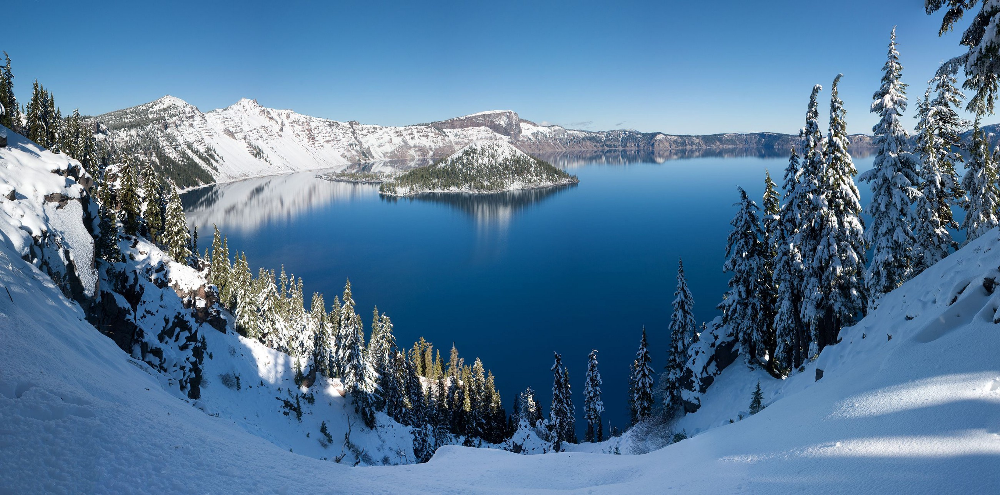

CURTINDO O INVERNO
A região é simplesmente maravilhosa em todas as estações, mas fica ainda mais charmosa quando está coberta de neve. A temporada de neve começa em novembro com média de 10cm e se estende até abril. O pico é em fevereiro com média de 40cm. Esqui, snowboard, cross-country, sledding, tubbing, dog sledding, snowmobile, snowshoeing são os esportes que atraem centenas de famílias americanas e muitos brasileiros na região de Lake Tahoe durante o inverno.
